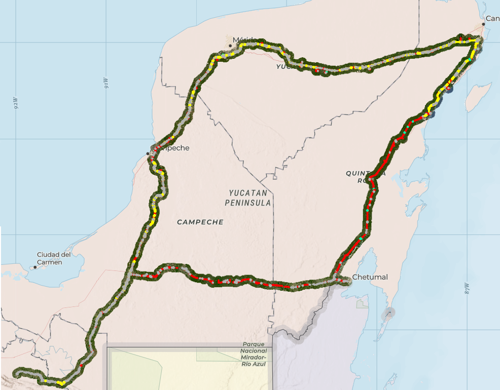
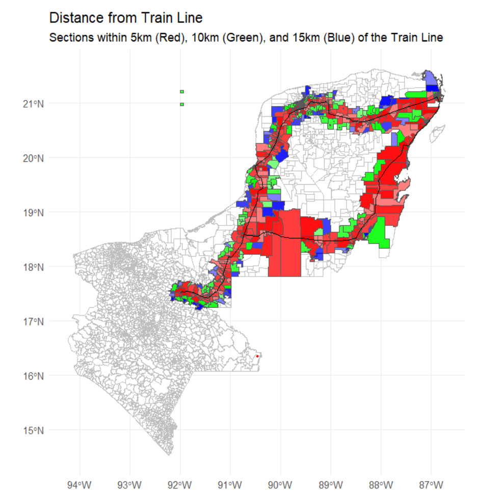
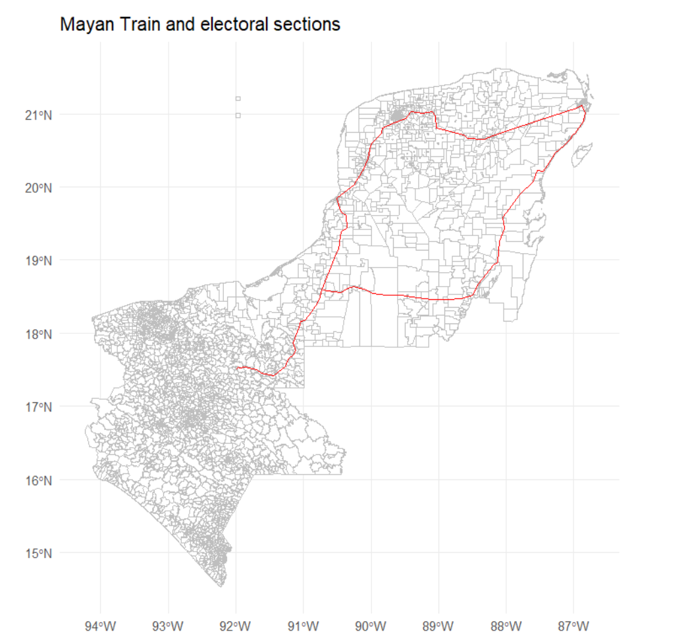

Political economy · environment · Mexico
Mayan Train and Local Deforestation
An interactive view of electoral sections linked to measured deforestation from the project CSV. Values in the map are aggregated from `def_seccion_m` by electoral section and reported in square meters.
Interactive map
Deforestation by electoral section
Loading map data...
Project images
Context next to the map


